目录
一个能够针对任何事实性知识问题给出答案的模型，可以催生许多有用的应用。本文深入探讨如何构建一个开放域问答（ODQA）系统，假设我们已经拥有一个强大的预训练语言模型。文中将同时讨论闭卷和开卷两种方法。
[2020-11-12更新：新增使用OpenAI API（beta）实现闭卷事实性问答的示例。]
一个能够针对任何事实性知识问题给出答案的模型，可以催生许多有用且实际的应用，例如作为聊天机器人或AI助手🤖。在本文中，我们将回顾构建这类开放域问答系统的几种常见方法。
鉴于该领域已有大量论文，特此声明：
什么是开放域问答？#
开放域问答（ODQA）是一种自然语言任务，要求模型用自然语言回答事实性问题。由于真实答案是客观的，因此评估模型性能相对简单。
例如，
Question: What did Albert Einstein win the Nobel Prize for?
Answer: The law of the photoelectric effect.
“开放域”指的是对于任意提出的事实性问题，模型缺乏相关的上下文信息。在上述例子中，模型仅以问题作为输入，而没有提供关于“为什么爱因斯坦没有因相对论获得诺贝尔奖”的文章（其中很可能提到“光电效应定律”这一术语）。当同时提供问题和上下文时，该任务被称为阅读理解（RC）。
ODQA模型可以在有或没有外部知识源（如Wikipedia）的情况下工作，这两种情况分别称为开卷问答和闭卷问答。
在考虑不同类型的开放域问题时，我喜欢Lewis等（2020）按照难度递增进行的分类：
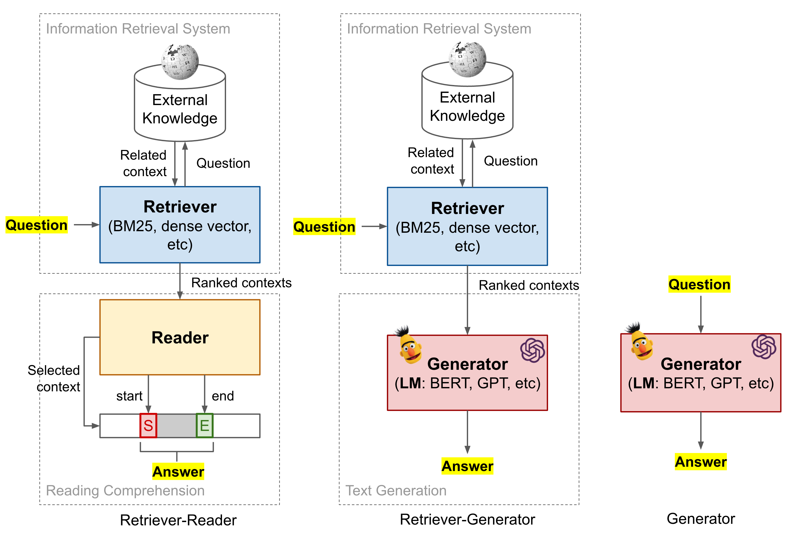
符号说明#
给定一个问题x和真实答案片段y，包含真实答案的上下文段落标记为z \in \mathcal{Z}，其中\mathcal{Z}是一个外部知识语料库。Wikipedia是此类外部知识源的常见选择。
QA数据微调的注意事项#
在深入介绍下面各种模型细节之前，我想先指出使用常见QA数据集微调模型的一个潜在问题，该步骤出现在多个ODQA模型中。这一点值得关注，因为在几个公开QA数据集中，训练集和测试集的问题存在大量重叠。
Lewis等（2020）（代码）发现，58-71%的测试时答案也出现在训练集中，28-34%的测试集问题在对应的训练集中存在近似重复或改写版本。在他们的实验中，当从训练集中移除重复或改写的问题后，多个模型的性能明显下降。
开卷问答：Retriever-Reader#
给定一个事实性问题，如果语言模型没有上下文，或者其规模不足以记住训练数据集中存在的上下文，那么它很难猜出正确答案。在开卷考试中，学生可以在回答问题时参考笔记和书籍等外部资源。类似地，ODQA系统可以与丰富的知识库配对，以识别相关文档作为答案的证据。
我们可以将回答给定问题的过程分解为两个阶段：
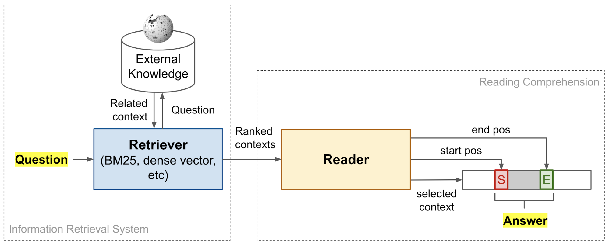
这种retriever+reader框架最早由DrQA（“Document retriever Question-Answering”，Chen等人，2017；代码）提出。Retriever和reader组件可以独立设置和训练，也可以端到端联合训练。
Retriever模型#
实现retriever的两种流行方法是使用依赖于（1）经典非学习型TF-IDF特征的信息检索（IR）系统（“经典IR”），或（2）由神经网络生成的文本稠密嵌入向量（“神经IR”）。
经典IR#
DrQA（Chen等人，2017）采用了一种基于向量空间模型的高效非学习型搜索引擎。每个查询和文档都被建模为词袋向量，其中每个词项由TF-IDF（词频\times逆文档频率）加权。
其中t是来自文档集合\mathcal{D}中某文档d的unigram或bigram词项。\text{freq}(t, d)衡量词项t在d中出现的次数。注意，这里的词频也包含bigram计数，这被发现非常有帮助，因为bigram考虑了局部词序。作为实现的一部分，DrQA使用无符号murmur3哈希将2^{24}的bigram映射到个桶中。
准确地说，DrQA将Wikipedia作为其知识源，这一选择从此成为许多ODQA研究的默认设置。非机器学习文档检索器在给定问题时返回最相关的topk=5篇Wikipedia文章。
BERTserini（Yang等人，2019）将开源Anserini IR工具包作为retriever，与经过微调的预训练BERT模型作为reader配对。通过Anserini的post-v3.0分支，将查询视为词袋，检索出topk个文档（k=10）。检索到的文本片段通过BM25（一种经典的基于TF-IDF的检索评分函数）进行排序。在文本粒度对性能的影响方面，他们发现段落检索 > 句子检索 > 文章检索。
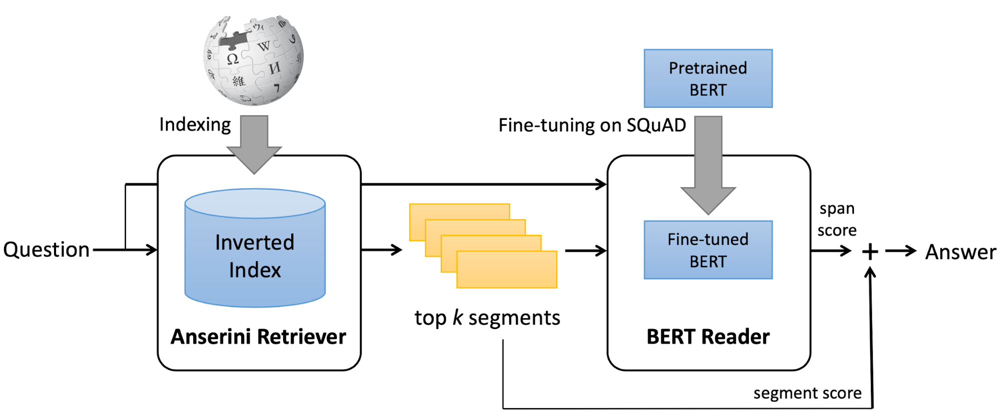
Multi-passage BERT问答模型（Wang等人，2019）使用ElasticSearch+BM25。他们发现，使用滑动窗口将文章切分成100词长的段落可带来4%的性能提升，因为不重叠地划分文档可能会导致边界附近的证据丢失有用的上下文。
神经IR#
学习文本的低维表示（比原始基于词项的向量更稠密）已有很长的历史（Deerwester等人，1990；Yih等人，2011）。稠密表示可以通过矩阵分解或某些神经网络架构（如MLP、LSTM、双向LSTM等）来学习。当涉及神经网络时，这种方法被称为“神经IR”。神经IR是检索问题的一类新方法，但并不一定优于经典IR（Lim，2018）。
在许多大规模泛化语言模型取得成功之后，许多问答模型采用了以下方法：
ORQA、REALM和DPR都使用这样的评分函数来进行上下文检索，将在后面端到端问答模型的部分详细描述。
DenSPI（“Dense-Sparse Phrase Index”；Seo等人，2019）探索了一种极端方法：在短语级别对知识语料库中的所有文本进行编码，然后仅依赖retriever来识别最相关的短语作为预测答案。这样，retriever+reader流水线被简化为仅剩retriever。当然，索引会大得多，检索问题也更具挑战性。
DenSPI引入了一种与查询无关的、可索引的文档短语表示。具体来说，它离线编码Wikipedia中文本片段的查询无关表示，并在推理时通过最近邻搜索查找答案。这可以极大地加快推理速度，因为不需要为每个新查询重新编码文档，而这通常是reader模型所要求的。
给定一个问题x和一组固定的（Wikipedia）文档z_1, \dots, z_K，每个文档z_k包含N_k个词z_k = \langle z_k^{(1)}, \dots, z_k^{(N_k)}\rangle。ODQA模型是一个针对每个候选短语片段z_k^{(i:j)}, 1 \leq i \leq j \leq N_k的评分函数F，使得真实答案是得分最高的短语：y = {\arg\max}_{k,i,j} F(x, z_k^{(i:j)})。
短语表示z_k^{(i:j)}同时结合了稠密向量和稀疏向量z_k^{(i:j)} = [d_k^{(i:j)}, s_k^{(i:j)}] \in \mathbb{R}^{d^d + d^s}（注意d^d \ll d^s）：
稠密向量d^{(i:j)}进一步被分解为三个部分d^{(i:j)} = [a_i, b_j, c_{ij}] \in \mathbb{R}^{2d^b + 1}，其中2d^b + 1 = d^d。所有三个组件都是基于微调后的BERT表示的不同列学习得到的。
对于所有可能的(i,j,k)元组（其中j-i < J），文本片段嵌入被预先计算并存储为短语索引。最大片段长度J是一个预定义的标量常数。
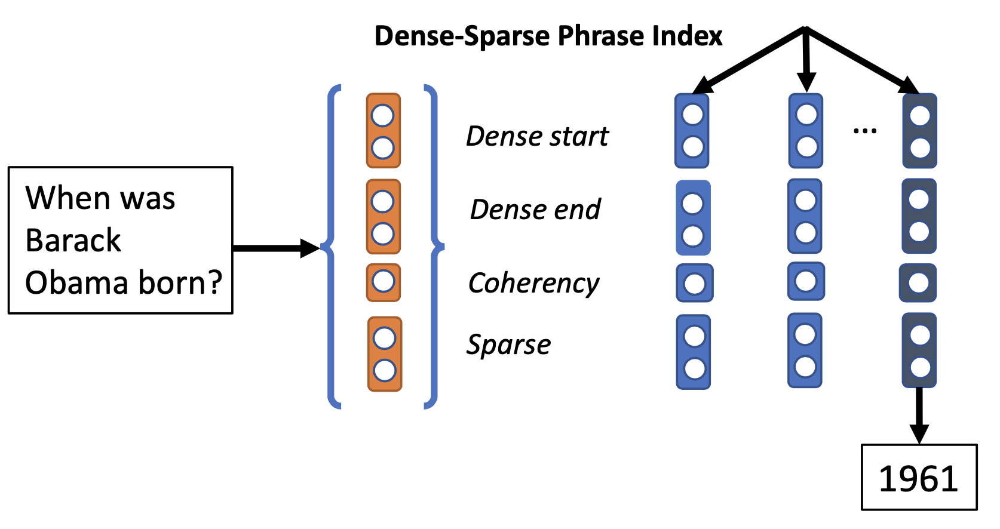
在推理时，问题被映射到相同的向量空间x=[d’, s’] \in \mathbb{R}^{d^d + d^s}，其中稠密向量d’是从特殊[CLS]符号的BERT嵌入中提取的。编码问题和短语使用同一个BERT模型。最终答案通过k^*, i^*, j^* = \arg\max x^\top z_k^{(i:j)}预测。
Reader模型#
Reader模型学习解决阅读理解任务——从给定上下文文档中为给定问题提取答案。这里我们只讨论使用神经网络进行机器阅读理解的方法。
双向LSTM#
DrQA（Chen等人，2017）的答案检测reader模型是一个3层双向LSTM，隐层大小为128。检索到的Wikipedia文章的每个相关段落被编码为一系列特征向量\{\tilde{\mathbf{z}}_1, \dots, \tilde{\mathbf{z}}_m \}。每个特征向量\hat{\mathbf{z}}_i \in \mathbb{R}^{d_z}旨在捕捉围绕一个词元z_i的有用上下文信息。特征由以下几类组成：
其中\alpha是一个带ReLU的单层稠密网络，E_g(.)是glove词嵌入。
包含m个词元的段落的特征向量被输入LSTM，得到最终的段落向量：
问题被编码为问题中每个词嵌入的加权和：
其中\mathbf{w}是需要学习的权重向量。
一旦为问题和所有相关段落构建了特征向量，reader就需要预测段落中每个位置作为答案起始和结束位置的概率，分别为p_\text{start}(i_s)和p_\text{end}(i_s)。在所有段落中，选择具有最大p_\text{start}(i_s) \times p_\text{end}(i_e) 的最优片段作为最终答案。
其中\mathbf{W}_s和\mathbf{W}_e是学习得到的参数。
BERT系列#
随着泛化语言模型（Devlin等人，2018）的成功，许多问答模型基于BERT开发机器阅读理解组件。让我们将BERT模型定义为一个函数，它可以接受一个或多个字符串（用[SEP]连接）作为输入，并输出特殊[CLS] token和每个输入token的BERT编码向量集合：
其中\mathbf{h}^\texttt{[CLS]}是特殊[CLS] token的嵌入向量，\mathbf{h}^{(i)}是第i个token的嵌入向量。
要使用BERT进行阅读理解，它学习两个额外的权重\mathbf{W}_s和\mathbf{W}_e，\text{softmax}(\mathbf{h}^{(i)}\mathbf{W}_s)和\text{softmax}(\mathbf{h}^{(i)}\mathbf{W}_e)为每个token定义了预测片段的起始和结束位置的两个概率分布。
BERTserini（Yang等人，2019）使用预训练的BERT模型作为reader。他们的实验表明，仅使用SQuAD微调预训练BERT就足以在识别答案片段上达到高准确率。
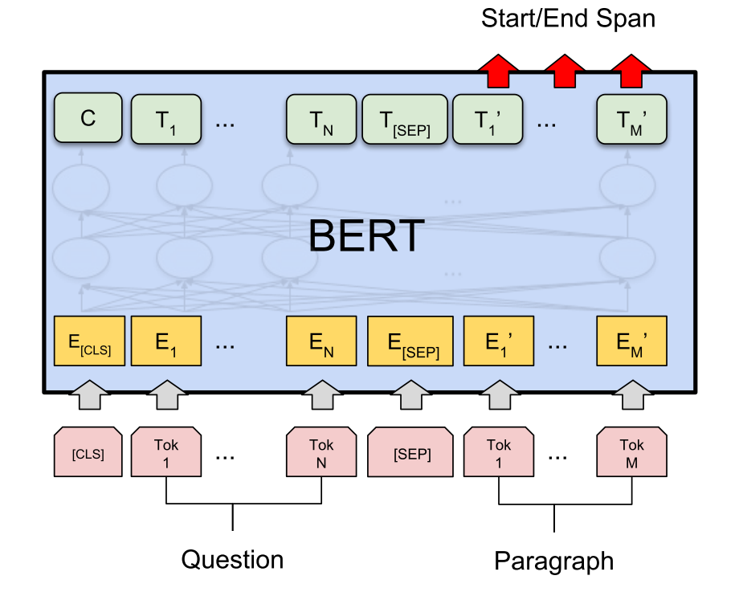
BERTserini reader与原始BERT的关键区别是：为了允许对来自不同片段的结果进行比较和聚合，移除了不同答案片段上的最终softmax层。预训练的BERT模型在SQuAD训练集上进行微调，输入reader的所有输入都被填充到384个token，学习率设为3e-5。
在对所有提取的答案片段进行排序时，通过线性插值结合retriever分数（BM25）和reader分数（token作为起始位置的概率\times同一token作为结束位置的概率）。
原始BERT对每个段落独立地归一化起始和结束位置的概率分布。不同的是，Multi-passage BERT（Wang等人，2019）对一个问题的所有检索到的段落全局归一化答案分数。具体来说，multi-passage BERT移除了BERT中每个段落的最终归一化层（与BERTserini相同），然后在所有段落的所有词位置上添加全局softmax。全局归一化使得reader模型在从大量段落中精确定位答案时更加稳定。
此外，multi-passage BERT使用另一个BERT模型实现了一个独立的段落排序器模型，通过第一个[CLS] token的表示向量上的softmax生成(x, z)的排序分数。该段落排序器带来了额外的2%性能提升。使用BERT对段落进行重排序的类似想法也在Nogueira & Cho，2019中讨论过。
有趣的是，Wang等人，2019发现，对于使用BERT的阅读理解任务，显式的句子间匹配似乎并不关键；具体实验设计请查阅原论文。一个可能的原因是BERT中的多头自注意力层已经嵌入了句子间匹配。
端到端联合训练#
Retriever和reader组件可以进行联合训练。本节介绍R^3、ORQA、REALM和DPR。这些模型有许多共同的设计，例如用于检索的基于BERT的稠密向量，以及最大化获得真实答案的边际似然的损失函数。
R^3（“Reinforced Ranker-Reader”；Wang等人，2017）问答系统中的retriever和reader模型通过强化学习漫谈进行联合训练。（为保持本节论文术语一致，原R^3论文中的“ranker”模型在此称为“retriever”模型。）两个组件都是Match-LSTM的变体，该模型依赖注意力机制来计算段落和问题序列之间的词相似性。
Match-LSTM模块如何工作？给定一个包含d_x个词的问题\mathbf{X}和包含d_z个词的段落\mathbf{Z}，两者都使用固定的学习词嵌入词嵌入，
其中l是双向LSTM模块的隐层维度。\mathbf{W}^g \in \mathbb{R}^{l\times l}、\mathbf{b}^g \in \mathbb{R}^l和\mathbf{W}^m \in \mathbb{R}^{2l \times 4l}是需要学习的参数。运算符\otimes \mathbf{e}_{d_x}是外积，用于将列向量\mathbf{b}^g重复d_x次。
Ranker和reader组件共享同一个Match-LSTM模块，在最后一层有两个独立的预测头，分别产生\mathbf{H}^\text{rank}和\mathbf{H}^\text{reader}。
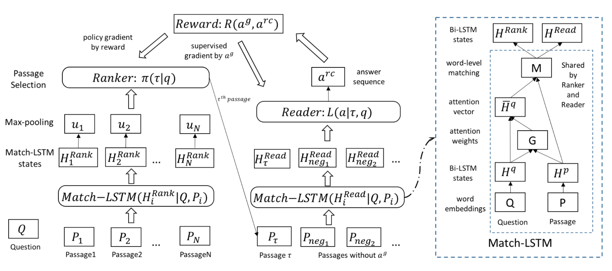
Retriever对每个段落执行最大池化操作，然后聚合输出每个段落蕴含答案的概率。
最后，retriever被视为一个策略，根据预测的\gamma输出动作来采样一个段落，
Reader预测答案片段的起始位置\beta^s和结束位置\beta^e。两个位置的计算方式相同，但使用独立的学习参数。所有涉及的段落中共有V个词。
其中y是真实答案，由retriever采样的段落为z。\beta^s_{y_z^s}和\beta^s_{y_z^e}分别表示在段落z中y的起始和结束位置的概率。
端到端R^3问答系统的训练目标是最小化给定问题x时获得正确答案y的负对数似然，
本质上在训练中，给定retriever采样的段落z，reader通过梯度下降训练，而retriever通过策略梯度算法使用L(y \vert z, x)作为奖励函数进行训练。然而，L(y \vert z, x)没有界限，可能会引入很大方差。论文用一个定制的评分函数替换奖励，通过比较真实答案y和reader提取的答案\hat{y}：
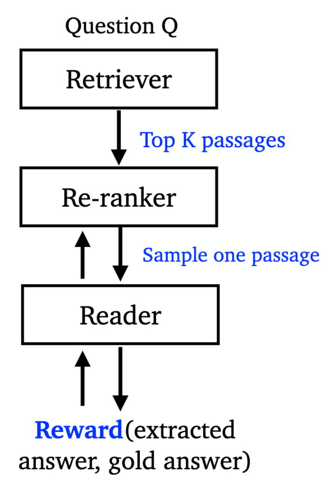
ORQA（“Open-Retrieval Question-Answering”；Lee等人，2019）以监督方式联合学习retriever+reader问答模型，以优化获得正确答案的边际对数似然。不涉及显式的“黑盒”IR系统。相反，它能够从开放语料库中检索任意文本。在训练期间，ORQA不需要真实上下文段落（即阅读理解数据集），只需要（问题，答案）字符串对。Retriever和reader组件都基于BERT，但不共享参数。
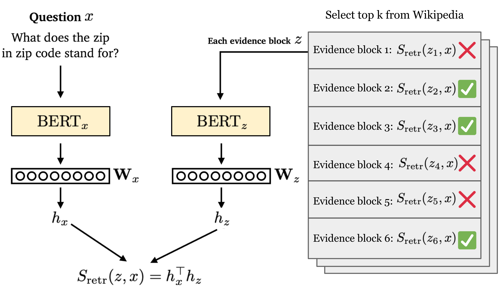
所有证据块根据检索分数排序，该分数定义为问题x的[CLS] token的BERT嵌入向量与证据块z的[CLS] token的BERT嵌入向量的内积。注意，问题和上下文的编码器是独立的。
Retriever模块使用Inverse Cloze Task（ICT）进行预训练，即给定句子预测上下文，这与标准的Cloze Task方向相反。ICT的目标是在给定随机句子x时最大化正确上下文z的检索分数：
其中\text{BATCH}(\mathcal{Z})是同一批次中用作采样负例的证据块集合。
经过这样的预训练后，BERT retriever应该具有足够好的表示来支持证据检索。只有问题编码器需要针对答案提取进行微调。换句话说，证据块编码器（即\mathbf{W}_z和\text{BERT}_z）是固定的，因此所有证据块编码可以预先计算，并支持快速最大内积搜索（MIPS）。
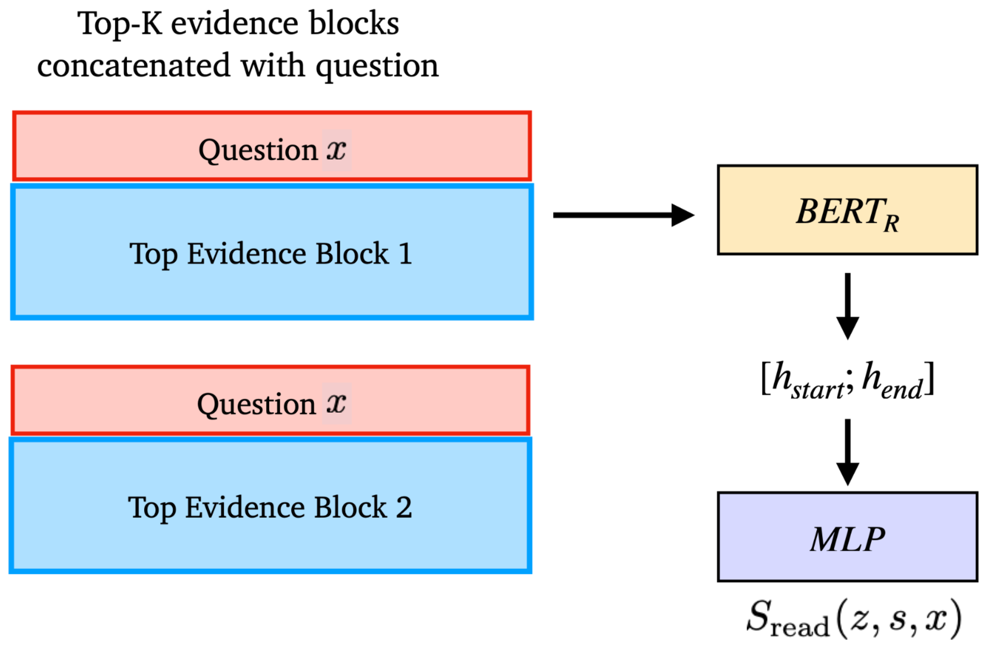
Reader遵循与原始泛化语言模型实验相同的设计。它以监督方式学习，而证据块编码器的参数保持固定，其他所有参数都进行微调。给定问题x和真实答案字符串y，reader损失包含两部分：
（1）在topk个证据块内找到所有正确的文本片段，并针对匹配真实答案y的文本片段s优化边际似然：
其中y=\text{TEXT}(s)表示答案y是否与文本片段s匹配。\text{TOP}(k)是根据S_\text{retr}(z, x)检索到的topk个块。论文设置k=5。
（2）在学习的早期阶段，当retriever还不够强大时，可能topk个块中没有一个包含答案。为了避免这种稀疏的学习信号，ORQA考虑更大集合的c个证据块来进行更激进的学习。论文中c=5000。
ORQA论文中讨论了SQuAD数据集的一些问题：
“SQuAD在开发集和测试集准确率之间的显著下降反映了数据集中的一个人为现象——其10万个问题仅来自536个文档。因此，好的检索目标在训练样本之间高度相关，违反了IID假设，使其不适合用于学习型检索。我们强烈建议对端到端开放域问答模型感兴趣的人不要再使用SQuAD进行训练和评估。”
REALM（“Retrieval-Augmented Language Model pre-training”；Guu等人，2020）也通过优化获得真实答案的边际似然来联合训练retriever+reader：
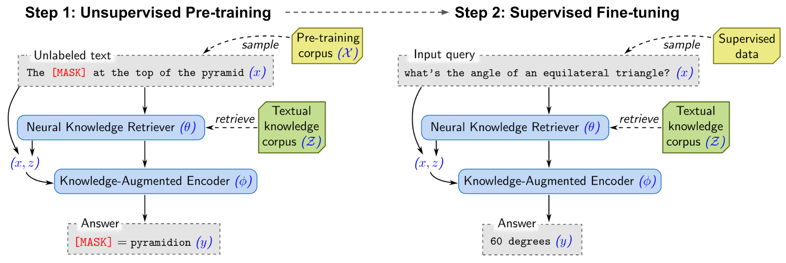
REALM计算两个概率p(z \vert x)和p(y \vert x, z)，与ORQA相同。然而，与ORQA中的ICT不同，REALM用若干新的设计决策升级了无监督预训练步骤，从而获得更好的检索效果。REALM使用Wikipedia或CC-News语料库进行预训练。
“在所有系统中，与REALM最直接比较的是ORQA（Lee等人，2019），其中微调设置、超参数和训练数据完全相同。REALM相对于ORQA的改进完全归功于更好的预训练方法。”——摘自REALM论文。
无监督预训练和有监督微调都优化相同的对数似然\log p(y \vert x)。由于证据文档的retriever编码器参数也会在过程中更新，MIPS的索引是变化的。REALM每隔几百个训练步，使用更新的编码器参数异步刷新索引。
Balachandran等人（2021）发现REALM明显训练不足，REALM++通过扩大模型训练规模（使用更大的batch size和更多供reader处理的检索文档）在EM准确率上取得了显著提升（3-5%）。
DPR（“Dense Passage Retriever”；Karpukhin等人，2020，代码）认为ICT预训练计算成本可能过高，而且ORQA的上下文编码器可能不是最优的，因为它没有用问答对进行微调。DPR旨在通过仅从少量Q/A对训练一个仅用于检索的稠密双编码器架构来解决这两个问题，而无需任何预训练。
与之前工作一样，DPR使用BERT表示的点积（L2距离或余弦相似度也适用）作为检索分数。训练双编码器的损失函数是正样本段落的NLL，本质上采用了与ORQA的ICT损失相同的公式。注意，两者都将同一批次中的其他段落视为负样本，称为批内负采样。主要区别在于DPR依赖有监督的QA数据，而ORQA使用无监督语料上的ICT进行训练。在推理时，DPR使用FAISS运行快速MIPS。
DPR进行了一系列对比实验，涉及几种不同类型的负样本：
DPR发现，使用来自同一小批次的gold段落和一个具有高BM25分数的负样本段落效果最佳。为了进一步改进检索结果，DPR还探索了将BM25分数和稠密嵌入检索分数线性组合作为新的排序函数的设置。
开卷问答：Retriever-Generator#
与retriever-reader方法相比，retriever-generator同样有两个阶段，但第二阶段是直接生成自由文本来回答问题，而不是从检索到的段落中提取起始/结束位置。有些论文也将其称为生成式问答。
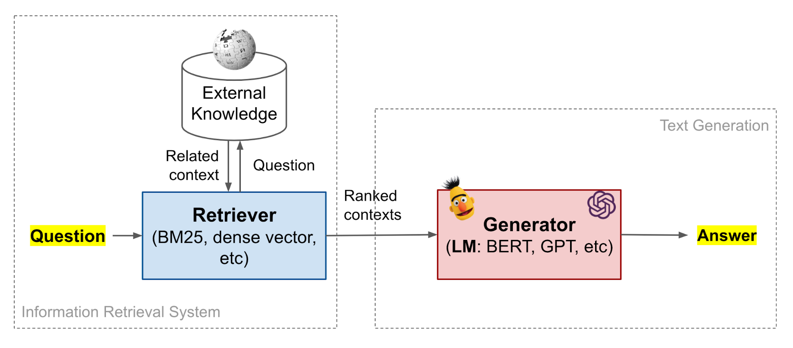
如上所示，预训练语言模型在其参数中具有很强的记忆知识的能力。然而，它们难以轻松修改或扩展记忆，无法直接提供对其预测的洞察，并且可能会产生不存在的幻觉。
Petroni等人（2020）研究了检索到的相关上下文如何帮助生成式语言模型产生更好的答案。他们发现：
他们将BERT模型与不同类型的上下文配对，包括对抗性（不相关上下文）、检索到的（通过BM25）和生成式的（由参数量为1.4N、在CC-NEWS上训练的自回归语言模型生成）。模型被发现对对抗性上下文具有鲁棒性，但前提是问题和上下文作为两个片段提供（例如用[SEP]分隔）。一个假设与NSP任务相关：“如果NSP分数较低，BERT可能会学会不在片段之间调节掩码token预测，从而隐式地检测不相关和有噪声的上下文。”
RAG（“Retrieval-Augmented Generation”；Lewis等人，2020）将预训练的参数化记忆（语言模型）和非参数化记忆（外部知识索引）结合在一起用于语言生成。RAG可以在任何seq2seq任务上进行微调，在此过程中retriever和序列生成器被联合学习。他们发现无约束生成优于之前的抽取式方法。
RAG由retriever模型p_\eta(z \vert x)和generator模型p_\theta(y_i \vert x, z, y_{1:i-1})组成：
根据是否为每个token生成使用相同或不同的检索文档，RAG有两种版本：
RAG中的retriever+generator被联合训练以最小化NLL损失\mathcal{L}_\text{RAG} = \sum_j -\log p(y_j \vert x_j)。更新段落编码器E_z(.)代价很高，因为这需要模型为快速MIPS重新索引文档。RAG发现不需要微调E_z(.)（如ORQA中那样），只需更新query编码器+generator。
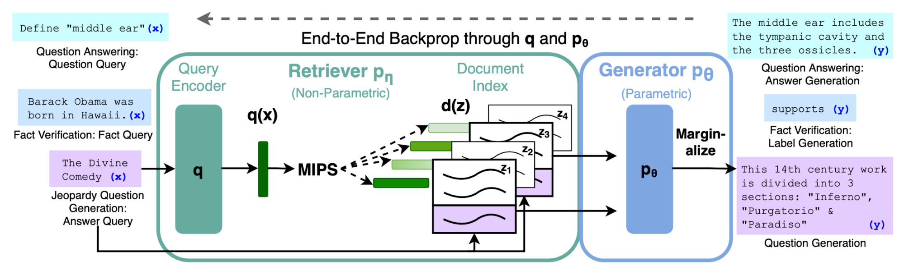
在解码/测试时，RAG-token可以通过束搜索进行评估。RAG-seq无法分解为一组每个token的似然，因此它为每个候选文档z运行束搜索，并选择具有最优p_\theta(y_i \vert x, z, y_{1:i-1})的那个。
Izacard & Grave（2020）提出的Fusion-in-Decoder方法也基于预训练的T5。它与RAG类似，但上下文整合到decoder的方式不同。
注意，他们对每个数据集独立地微调了预训练语言模型。
闭卷问答：生成式语言模型#
大型语言模型已经在大量无监督文本语料上进行了预训练。给定足够多的参数，这些模型能够将一些事实性知识记忆在参数权重中。因此，我们可以使用这些模型进行问答而无需显式上下文，就像在闭卷考试中一样。预训练语言模型生成自由文本来回应问题，没有显式的阅读理解过程。
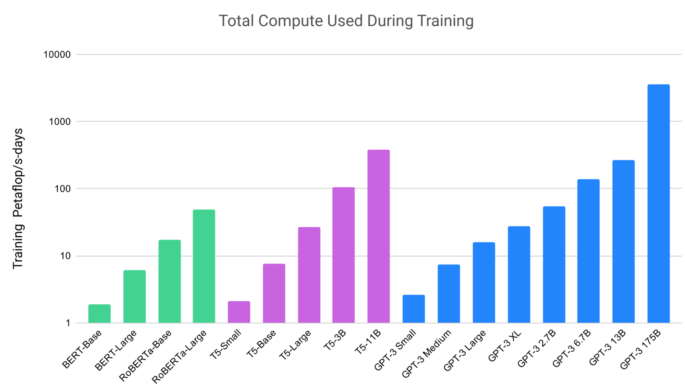
Roberts等人（2020）通过将预训练模型微调为在没有任何外部上下文或知识的情况下回答问题，来衡量语言模型的实际效用。他们微调了T5语言模型（与原始Transformer架构相同），在不输入任何额外信息或上下文的情况下回答问题。这种设置迫使语言模型基于其在预训练期间“内化”的“知识”来回答问题。
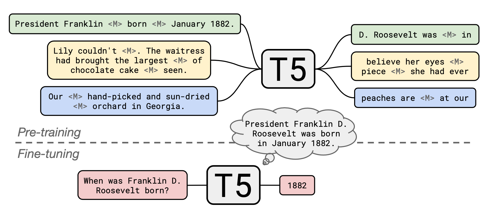
原始T5模型在一个多任务混合上进行预训练，包括在C4（“Colossal Clean Crawled Corpus”）数据集上的无监督泛化语言模型（MLM）任务，以及与有监督的翻译、摘要、分类和阅读理解任务一起微调。Roberts等人（2020）采用了一个预训练的T5模型，并在Wikipedia语料库上继续使用显著跨度掩码进行预训练，这被发现能显著提升ODQA的性能。然后他们针对每个QA数据集独立地进行微调。
使用预训练T5语言模型 + 使用显著跨度掩码继续预训练 + 针对每个QA数据集进行微调，
有趣的是，微调并不是严格必要的。GPT-3（Brown等人，2020）在没有任何梯度更新或微调的情况下，在闭卷问答任务上进行了评估。在评估期间，此处的few-shot、one-shot和zero-shot设置仅指在文本输入中提供了多少个示范作为上下文：
性能随着模型规模增长而提升。在TriviaQA数据集上，带示范的GPT-3评估可以达到或超过带有微调的SOTA基线的性能。
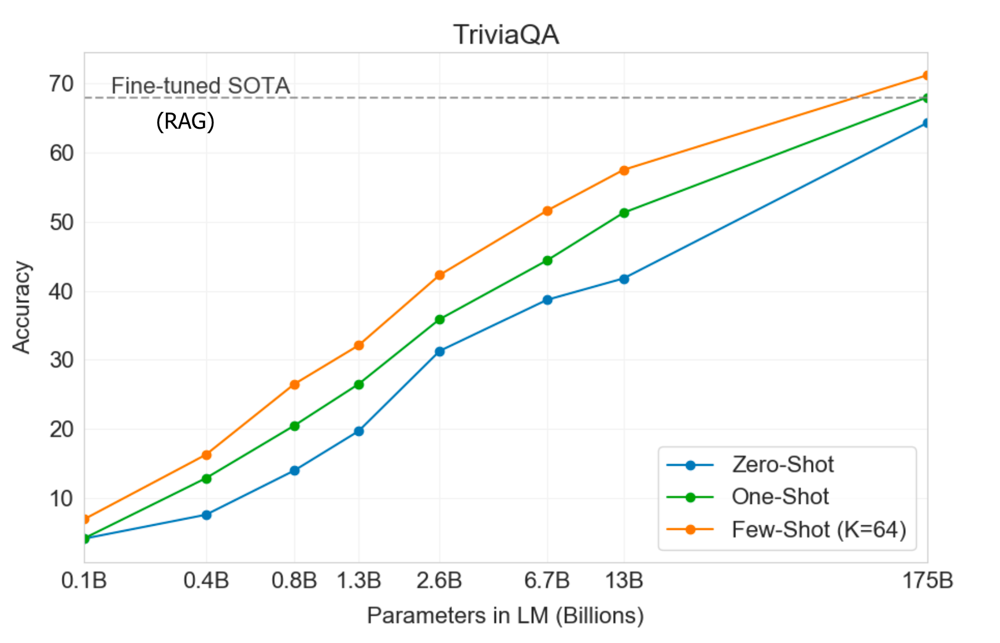
查看OpenAI APIplayground中的这个很酷的示例。该模型能够用简短答案回答事实性问题，并且在不知道答案时不会编造内容。我添加了最后两个问题，并要求模型以A:回应。API仍处于beta版本，因此您可能需要申请进入等待列表。
Q: Who is Batman?
A: Batman is a fictional comic book character.
##
Q: What is torsalplexity?
A: ?
##
Q: What is Devz9?
A: ?
##
Q: Who is George Lucas?
A: George Lucas is American film director and producer famous for creating Star Wars.
##
Q: What is the capital of California?
A: Sacramento.
##
Q: What orbits the Earth?
A: The Moon.
##
Q: Who is Fred Rickerson?
A: ?
##
Q: What is an atom?
A: An atom is a tiny particle that makes up everything.
##
Q: Who is Alvan Muntz?
A: ?
##
Q: What is Kozar-09?
A: ?
##
Q: How many moons does Mars have?
A: Two, Phobos and Deimos.
##
Q: What is COVID-19?
A: ?
##
Q: What is H1N1?
A: H1N1 is a strain of influenza.
相关技术#
快速最大内积搜索（MIPS）#
MIPS（最大内积搜索）是许多开放域问答模型中的关键组件。在retriever+reader/generator框架中，来自知识源的大量段落被编码并存储在内存中。检索模型能够查询该内存，以识别与问题嵌入具有最大内积的最相关top段落。
我们需要快速MIPS，因为预先计算的段落表示数量可能非常巨大。在运行时实现快速MIPS有几种方法，例如asymmetric LSH、data-dependent hashing和FAISS。
语言模型预训练#
如上所述，有两个预训练任务对QA任务特别有帮助。
总结#
| Model | Retriever | Reader / Generator | Pre-training / Fine-tuning | End2end |
|---|---|---|---|---|
| DrQA | TF-IDF | Bi-directional LSTM | – | No |
| BERTserini | Aserini + BM25 | BERT without softmax layer | Fine-tune with SQuAD | No |
| Multi-passage BERT | ElasticSearch + BM25 | Multi-passage BERT + Passage ranker | No | |
| R^3 | Classic IR + Match-LSTM | Match-LSTM | Yes | |
| ORQA | Dot product of BERT embeddings | BERT-RC | Inverse cloze task | Yes |
| REALM | Dot product of BERT embeddings | BERT-RC | Salient span masking | Yes |
| DPR | Dot product of BERT embeddings | BERT-RC | supervised training with QA pairs | Yes |
| DenSPI | Classic + Neural IR | – | Yes | |
| T5 + SSM | – | T5 | SSM on CommonCrawl data + Fine-tuning on QA data | Yes |
| GPT3 | – | GPT3 | NSP on CommonCrawl data | Yes |
| RAG | DPR retriever | BART | Yes | |
| Fusion-in-Decoder | BM25 / DPR retriever | Tranformer | No |
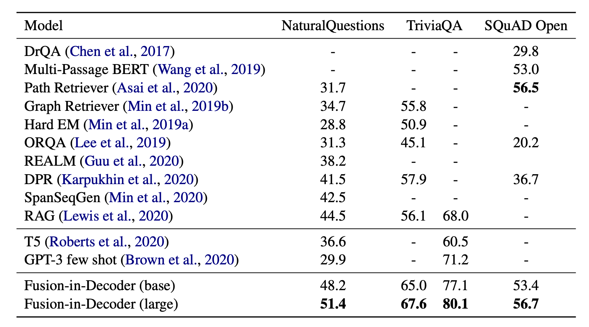
引用#
引用格式：
Weng, Lilian. (2020年10月). 如何构建开放域问答系统？Lil’Log. https://lilianweng.github.io/posts/2020-10-29-odqa/。
@article{weng2020odqa,
title = "How to Build an Open-Domain Question Answering System?",
author = "Weng, Lilian",
journal = "lilianweng.github.io",
year = "2020",
month = "Oct"
url = "https://lilianweng.github.io/posts/2020-10-29-odqa/"
}
附录：QA数据集#
参考文献#
[1] Danqi Chen & Scott Yih. “ACL2020 Tutorial: Open-Domain Question Answering” 2020年7月。
[2] Danqi Chen等人。“Reading Wikipedia to Answer Open-Domain Questions” ACL 2017。| 代码
[3] Shuohang Wang等人。“R^3: Reinforced Ranker-Reader for Open-Domain Question Answering” AAAI 2018。
[4] Jimmy Lin。“The neural hype and comparisons against weak baselines.” ACM SIGIR Forum. Vol. 52. No. 2. 2019。
[5] Wei Yang等人。“End-to-End Open-Domain Question Answering with BERTserini” NAACL 2019。
[6] Christopher Clark & Matt Gardner。“Simple and Effective Multi-Paragraph Reading Comprehension.” arXiv:1710.10723 (2017)。
[7] Rodrigo Nogueira & Kyunghyun Cho。“Passage Re-ranking with BERT.” arXiv preprint arXiv:1901.04085 (2019)。| 代码
[8] Zhiguo Wang等人。“Multi-passage BERT: A globally normalized BERT model for open-domain question answering.” EMNLP 2019。
[9] Minjoon Seo等人。“Real-time open-domain question answering with dense-sparse phrase index.” ACL 2019。
[10] Kenton Lee等人。“Latent Retrieval for Weakly Supervised Open Domain Question Answering” ACL 2019。
[11] Kelvin Guu等人。“REALM: Retrieval-Augmented Language Model Pre-Training” arXiv:2002.08909 (2020)。
[12] Vladimir Karpukhin等人。“Dense passage retrieval for open-domain question answering.” EMNLP 2020。| 代码
[13] Patrick Lewis等人。“Retrieval-Augmented Generation for Knowledge-Intensive NLP Tasks” arXiv:2005.11401 (2020)。
[14] Adam Roberts等人。“How Much Knowledge Can You Pack Into the Parameters of a Language Model?” EMNLP 2020。
[15] Tom Brown等人。“Language models are few-shot learners.” arXiv:2005.14165 (2020)。
[16] Fabio Petroni等人。“How Context Affects Language Models’ Factual Predictions” AKBC 2020。
[17] Gautier Izacard & Edouard Grave。“Leveraging passage retrieval with generative models for open domain question answering.” arXiv:2007.01282 (2020)。
[18] “Dive into deep learning: Beam search”
[19] Patrick Lewis等人。“Question and Answer Test-Train Overlap in Open-Domain Question Answering Datasets” arXiv:2008.02637 (2020)。| 数据
[20] Hervé Jegou等人。“Faiss: A library for efficient similarity search” 2017年3月。
[21] Vidhisha Balachandran等人。“Simple and Efficient ways to Improve REALM.” arXiv:2104.08710 (2021)。